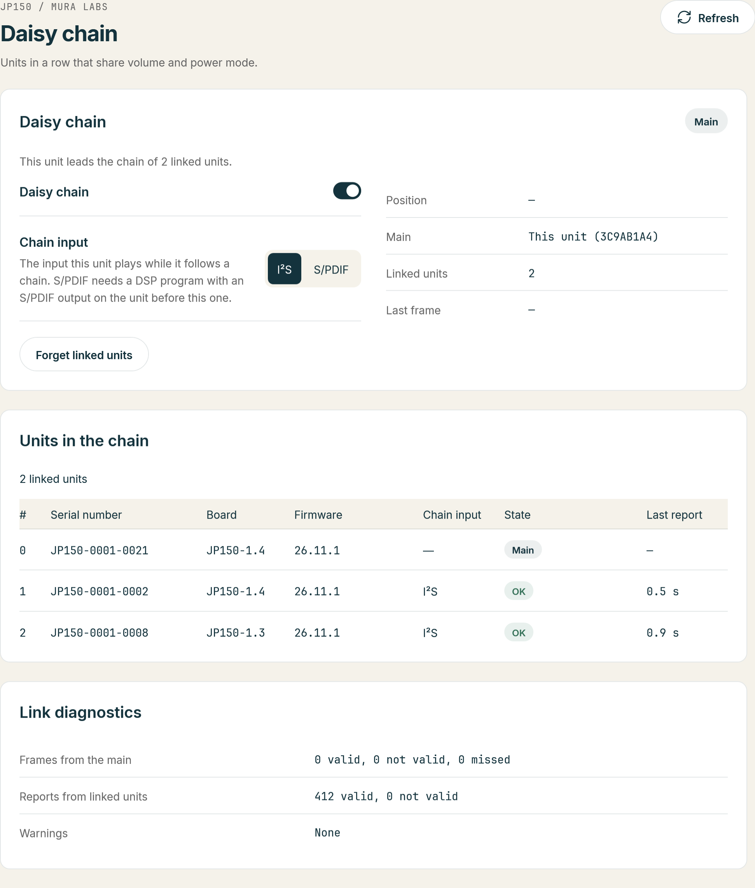

Daisy chain: use, status and limits¶
JP150PCB 1.3PCB 1.4since 26.11.1Jan PřibyslavskýThis page does not apply to the product or PCB revision chosen in the header.
What a chain does once it is set up, how to read its state, what the alpha release leaves open, and where to look when it does not work. The cables are on Daisy chain: about and cables, the set-up on Daisy chain: setting up.
What the chain shares¶
| Function | In a chain |
|---|---|
| Master volume | That of the main. Every way of changing it on the main counts: the encoder, MuraLink, AMP:VOL, the volume of a streaming app. The linked modules follow |
| Power level | That of the main, at every level, SLEEP and STANDBY included. The linked modules go down and wake with the main, whatever changed its level: a command, its automatic power-down, its 12 V trigger, its encoder |
| Input | The main plays its selected input. A linked module plays its chain input; its stored input selection is kept and returns when it leaves the chain |
| Channel volumes | Per module: the volumes of the two power stages of every module stay its own |
| DSP program | Per module |
| Bluetooth and Wi-Fi modules | Stay as they are on every module |
A change of the volume on the main is on the first linked module within about 0.1 s and on each
further module about 26 ms later. SLEEP reached the first linked module after 0.24 s and the
second after 0.36 s. Tried on modules: the encoder and AMP:VOL of the main, the power levels by
command, the automatic power-down of the main and its wake by the encoder. Not tried: the volume of
a streaming app and the 12 V trigger of the main.
What is locked on a linked module¶
These belong to the chain, so a linked module does not take them from its own controls:
- The encoder: turning, pressing, holding and waking the module with it are ignored.
- The commands
AMP:VOL,SYS:INPUTandSYS:POWER:MODE: they answerERR:CHAIN:LINKEDand change nothing. Their queries are served:AMP:VOL?gives the volume of the chain,SYS:INPUT?the chain input. - Its automatic power-down and its 12 V trigger: they have no effect while the module follows the chain. Their settings are kept.
In MuraLink the source tiles and the master volume of the Overview, the master volume of Power stage > Controls and the power-mode buttons of Device > Power Modes are greyed on such a module, with the tooltip Set on the main unit of the daisy chain and a notice above them that links to the Daisy chain page.
The USB port of a linked module stays usable for MuraLink, for diagnostics and for a firmware update.
The status LED¶
A linked module shows its place in the chain on the status LED, in place of the colour of its input:
| Status LED | Meaning |
|---|---|
| Steady green | Linked: the module follows a main |
| Green and red in turn (green 0.6 s, red 0.4 s) | The link is lost, or the module has just been switched on and waits for its main. The module is silent |
| Dark | A power-down level, as on a single module |
The main shows what a single module shows (Indicators and LEDs).
Switching on and off, and when something is missing¶
Every module remembers whether it was the main or a linked module when it was last on, so a chain comes up by itself in any order of switching on.
| Situation | What happens |
|---|---|
| A linked module is switched on and its main is running | It is silent, becomes linked with the first frame of the main, and plays 0.6 to 0.75 s after it, at the volume of the main |
| A linked module is switched on and its main is off | It is silent with the LED green and red, waits 5 s, and then becomes a main itself: it plays its own selected input at the last volume. When its main comes on later, it becomes linked again within a fraction of a second |
| The main is switched off while the chain plays | The linked modules lose the signal at once and are muted 2 s after the last frame, with the LED green and red. They stay silent, however long, until the main is back; then they play again after 0.6 to 0.75 s. A barely audible pop on the linked modules at the moment the main goes off was noted |
| The control cable is pulled | The modules behind the break are muted after 2 s and return with the first frame after the cable is back |
| The audio cable is pulled | The module stays linked and follows volume and power, but has no signal: it is silent until the cable is back |
| A module in the middle is switched off | The modules behind it lose their link and fall silent. The main drops them from its list after 3 s |
| The main is restarted by a command | The linked modules stay linked; the sound has a gap of about half a second. Tried with *RST and one linked module |
| A linked module is put into update mode | It is silent, and the modules behind it fall silent after 2 s. After the update, or after 5 minutes in update mode without one, it starts, links again by itself and plays. The return after 5 minutes was tried; an update of a linked module itself was not |
| The settings of a module are reset to the defaults | The feature is off on that module afterwards. Switch it on again |
A linked module that has lost its main does not become a main by itself while it runs; how to make it the main is on Daisy chain: setting up.
In MuraLink¶
The Daisy chain page shows the state of the module MuraLink is connected to.
- Daisy chain: the role badge and its line, Position (1 for the module behind the main), Main (the identity of the main, the same on every module of one chain), Linked units (how many linked modules the main lists) and Last frame (the time since the last frame of the main; a frame comes every half second).
- Units in the chain, on the main: one row per linked module. State reads OK, Link lost or Power-stage fault; Last report is the time since the module last reported, which it does once a second. The main lists up to 16 linked modules and drops one 3 s after its last report.
- Link diagnostics: Frames from the main as valid, not valid and missed, Reports from linked units as valid and not valid, and Warnings: a chain that is wired in a loop, two UART SLAVE connectors wired together, more than 16 linked modules, a module with another version of the link. On a linked module of a healthy chain the valid frames rise by 2 per second, and the frames that are not valid or missed stand still; on the main all three stay 0. The valid reports rise by one per second for every module behind this one.
The button of the first panel reads Make this unit the main on a module that waits for its main or has lost it, and Forget linked units on a main, where it empties the list; the linked modules are back in it within about a second.

Over the control interface¶
All of these answer from the memory of the module and cause no traffic on the link.
| Command | Answer | Use |
|---|---|---|
CHAIN:ENABLE? |
CHAIN:ENABLE:0 or CHAIN:ENABLE:1 |
Is the feature on |
CHAIN:AUDIO? |
CHAIN:AUDIO:I2S or CHAIN:AUDIO:SPDIF |
The chain input of this module |
CHAIN:ROLE? |
CHAIN:ROLE: and OFF, MAIN, DETECT, LINKED or LOST |
The role now; DETECT is the wait for the main after switching on |
CHAIN:STAT? |
Eleven fields, below | Role, position, main, and the counters of the link |
CHAIN:NODE:COUNT? |
CHAIN:NODE:COUNT:<n> |
On the main: how many linked modules it lists |
CHAIN:NODE? <pos> |
The module at that position, or NONE |
On the main: one linked module |
CHAIN:STAT:<role>,<pos>,<count>,<origin>,<age>,<ok>,<bad>,<missed>,<flags>,<rpt_ok>,<rpt_bad>
pos: the position, 1 for the module behind the main, 2 for the next; 0 on a module that is not linked.count: the linked modules the main lists.origin: the identity of the main, the same on every module of one chain.age: milliseconds since the last frame of the main. A frame comes every 500 ms.ok,bad,missed: frames of the main that arrived whole, lines that were damaged, and frames that never arrived. On a linked module of a healthy chainokrises by 2 per second and the other two stand still; on the main all three stay 0.flags:#H0000when nothing is wrong.#H0001: the chain is wired into a loop.#H0002: a frame of another version of the link arrived and was dropped.#H0004: more than 16 linked modules report.#H0020: two UART SLAVE connectors are wired together.rpt_ok,rpt_bad: the reports of the modules behind this one, valid and not valid.rpt_okrises by one per second for every module behind.
The first linked module of a chain with two linked modules:
On the main:
CHAIN:NODE:COUNT? -> CHAIN:NODE:COUNT:2
CHAIN:NODE? 1 -> CHAIN:NODE:1,JP150-0001-0002,JP150-1.4,26.11.1,I2S,#H0000,473
CHAIN:NODE? 2 -> CHAIN:NODE:2,JP150-0001-0008,JP150-1.3,26.11.1,I2S,#H0000,905
CHAIN:NODE? 3 -> CHAIN:NODE:3,NONE
An entry holds the serial number, the board, the firmware and the chain input of the module, its
flags (#H0004: a power-stage fault is latched on it; #H0008: it has lost its main) and the
milliseconds since its last report. The full description of every command is in the group
CHAIN of the command reference.
Limits of the alpha release¶
Known and accepted:
- No time alignment. Each linked module plays later than the module before it: 1.17 ms over I2S between two PCB 1.4 modules, the same after every start. That is what 40 cm of distance between two loudspeakers adds. It matters where modules play the same signal side by side or drive the ways of one loudspeaker. The delay cannot be set in this release; a delay that can be tuned follows in one of the next releases (known issue KI-12).
- A volume step needs time along a long chain: about 0.1 s to the first linked module and about 26 ms more for each further one. For the eighth module that adds up to about a quarter of a second, an estimate from two linked modules.
- A module that is off while the module in front of it is on is fed a little through the I2S cable (Plugging and unplugging).
- A linked module that is busy with a long command on its USB port, such as pairing a TWS partner, takes no frames meanwhile. After 2 s it and the modules behind it fall silent, and they resume by themselves when the command ends. This follows from the design and was not tried with a playing chain.
- The hardware mute of a linked module is shared with the chain. The chain mutes a linked module while it is silent and releases the mute when the silence ends, also a mute you had set by hand; and unmuting by hand lifts a silence of the chain.
- MuraLink cannot write the DSP boot memory of a module while it follows a chain that is awake. The write puts the module to sleep first, and a linked module takes its power level from the main only, so the write ends before it changes anything. Write the DSP program before the chain is set up, or switch the daisy chain off on that module for the write. This follows from the design and was not tried.
- A linked module switched on while the main is in a level with the power stages off can play for up to 4.4 s before it follows, because a module does not take the power level of the chain in the first 5 s after its own start.
Tried for this release: three modules, two PCB 1.4 and one PCB 1.3 at the end of the chain, with the audio over I2S, and a night of 6.7 hours with a silent chain, which lost no frame.
Not tried for this release:
- A chain over S/PDIF beyond a first check, in which one linked module played over S/PDIF at the level of I2S: its delay, a chain of three and a start of the main were not measured.
- More than three modules.
- Many hours of music at full power.
- A PCB 1.3 module anywhere but at the end of a chain: as the sender of the control link and of the audio, with the adapter cable in that direction.
- The 12 V trigger together with a chain, a module that is moved from one main to another, and a SigmaStudio programmer on a linked module.
When it does not work¶
| What you see | Look at |
|---|---|
Both modules say MAIN (in MuraLink Main), and on the second one the frames from the main stay at 0 valid and 0 not valid |
No frame arrives: the control cable. Is it in UART SLAVE of the module in front and in UART1 of this one? Is it the right cable for the revision of this module (the control link)? Is the feature on on the module in front? |
The count of frames that are not valid rises on a linked module (bad) |
Damaged lines: the control cable or its plugs |
| A linked module is linked (steady green) but silent | The audio: is the cable in, and does the chain input name the connector it is in? Over I2S: is it a straight cable, and not the reversed shielded cable of the accessory kit? Over S/PDIF: does the module in front run a DSP program with an S/PDIF output? Does the main play at all? |
| The status LED of a linked module shows green and red | It has no main: the main is off, the feature is off on the main, or the control cable is out |
A module answers ERR:CHAIN:LINKED to AMP:VOL, SYS:INPUT or SYS:POWER:MODE, or MuraLink has greyed its source tiles, its master volume and its power-mode buttons |
It follows a chain: set these on the main |
| The encoder of a module does nothing | The same: it is a linked module |
| The main lists fewer linked modules than the chain has | The missing modules do not report: read the role of each. Look for a module that has lost its link, and at the cable behind the last module that is listed |
The warnings name a loop or two UART SLAVE connectors (#H0001, #H0020) |
A wiring error: the control cables form a ring, or one runs from UART SLAVE to UART SLAVE |
| A module plays its own source after being switched on alone | It was a linked module and found no main within 5 s. It links again when its main is on |
| After a reset of the settings the module no longer follows | The reset switched the feature off: switch it on again |